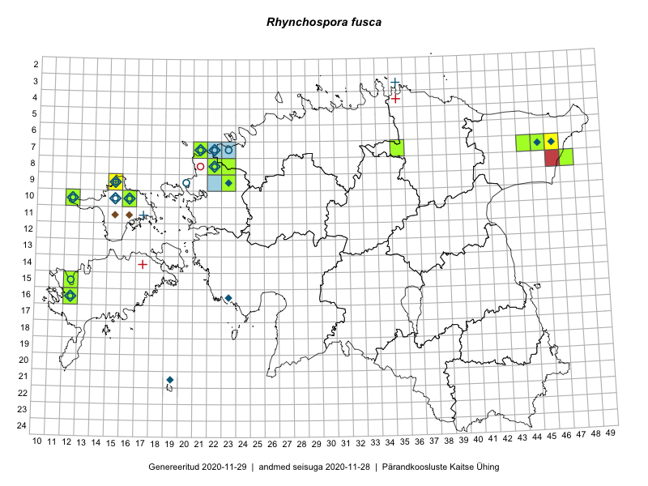

Rhynchospora fusca
Uuendatud: 2016-12-02
Kaardile koondatud taksonid: Rhynchospora fusca (L.) W.T.Aiton

Kaart põhineb 23 kirjel, neist vaatlusi 20 ja eksemplare 3. Taksonit on leitud 8 ruudust.
Kuvatud viited 20 esimesele andmebaasikirjele, ülejäänud PlutoFis
- Tiit Hallikma, Toomas Kukk: 2015-07-20: 07-44: ala
- Ott Luuk, Hannes Pehlak: 2015-07-22: 07-45: ala
- Meeli Mesipuu, Timo Luhamäe: 2015-07-21: 08-47: ala
- Ott Luuk: 2014-08-28: 10-16: ala
- Mari Reitalu, Triin Reitalu: 2015-07-20: 16-12: ala
- Mari Reitalu, Triin Reitalu: 2015-07-28: 16-12: GPS punkt
- Timo Luhamäe, Meeli Mesipuu: 2015-07-21: 08-47: GPS punkt
- Ott Luuk, Peedu Saar: 2014-10-31: 10-16: ala
- Peedu Saar, Ott Luuk: 2014-10-31: 10-16: GPS punkt
- Peedu Saar, Ott Luuk: 2014-10-31: 10-16: GPS punkt
- Peedu Saar, Ott Luuk: 2014-10-31: 10-16: GPS punkt
- Marju Erit: 2015-05-24: 08-22: ala
- Hanna-Eliisa Luts, Tõnu Ploompuu: 2015-07-16: 09-23: ala
- Mari Reitalu, Eerik Leibak: 2016-07-07: 08-22: ala
- Mari Reitalu, Eerik Leibak: 2016-07-07: 08-22: GPS punkt
- Maret Gerz, Meeli Mesipuu: 2016-08-09: 10-16: GPS punkt
- Mari Reitalu, Triin Reitalu, Sirje Azarov: 2016-07-10: 08-22: GPS punkt
- Mari Reitalu, Triin Reitalu, Sirje Azarov: 2016-07-09: 07-21: ala
- Mari Reitalu, Triin Reitalu, Sirje Azarov: 2016-07-09: 07-21: GPS punkt
- Marju Erit: 2015-05-24: 08-22: ala